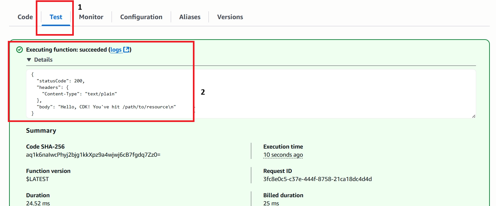

In this module you are going to deploy sample AWS Lambda function using CDK.
We’ll start with the AWS Lambda handler code.
Create a directory lambda in the root of your project tree (next to src).
Add a file called lambda/hello.js with the following contents:
exports.handler = async function(event) {
console.log("request:", JSON.stringify(event, undefined, 2));
return {
statusCode: 200,
headers: { "Content-Type": "text/plain" },
body: `Hello, CDK! You've hit ${event.path}\n`
};
};
This is a simple AWS Lambda function which returns the text “Hello, CDK! You’ve hit [url path]”. The function’s output also includes the HTTP status code and HTTP headers. These are used by API Gateway to formulate the HTTP response to the user.
The AWS CDK is shipped with an extensive library of constructs called the AWS Construct Library.
Update CdkLabStack.cs with the following changes:
using Amazon.CDK.AWS.Lambda;
using Amazon.CDK;
using Constructs;
using Amazon.CDK.AWS.Lambda;
namespace CdkLab
{
public class CdkLabStack : Stack
{
internal CdkLabStack(Construct scope, string id, IStackProps props = null) : base(scope, id, props)
{
// Defines a new lambda resource
var hello = new Function(this, "HelloHandler", new FunctionProps
{
Runtime = Runtime.NODEJS_20_X, // execution environment
Code = Code.FromAsset("lambda"), // Code loaded from the "lambda" directory
Handler = "hello.handler" // file is "hello", function is "handler"
});
}
}
}
A few things to notice:
First run cdk diff to take a look at the changes that are going to be deployed.
cdk diff
The output should look like this:
As you can see, this code synthesizes an AWS::Lambda::Function and AWS::IAM::Role resources. It also synthesized a couple of CloudFormation parameters that are used by the toolkit to propagate the location of the handler code.
Now it’s time to deploy the function.
cdk deploy
You should see a warning like the following:
Enter y to deploy the stack and create the resources.
Once stack is deployed, you should see the output like the following:
On the AWS Console page, click on the Lambda link under the Compute section (or search for Lambda).
Find your Lambda function (name starts with CdkLabStack-HelloHandler) and open it.
Switch to Test tab and configure test event.
Choose Amazon API Gateway AWS Proxy as event template (please notice the value of path attribute in the sample payload).
Click Test button to run the function.
Expand Details in the Executing function: succeeded pane and you should see an expected output (please notice that path value comes from the sample workload you provided):
